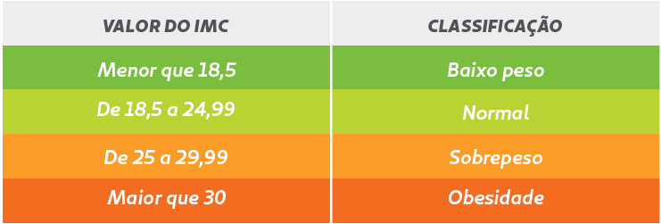

-
Implemente a função calculoIMC para calcular e retornar o valor do IMC.
A fórmula é peso / (altura * altura).
Não esqueça que a função calculoIMC deve retornar esse valor. -
De acordo com a tabela abaixo, implemente a lógica da função
resultadoIMC para,
recebendo o índice IMC,
retornar a faixa que a pessoa se encontra.
Tabela IMC
Desafio: estilizando a página
Essa página não contém nenhuma estilização
e como você pode vir tem diversas tags que não vimos em aula.
Fique a vontade para explorar e tentar entender oque elas fazem.
Você pode consultar o https://www.w3schools.com/html/default.asp
para te ajudar.
Caso esteja confortável e queira se desafiar, crie um arquivo CSS nessa pasta
e modifique o design da página como julgar melhor.
Não se esqueça de importar o arquivo css no Head da página conforme vimos em aula.